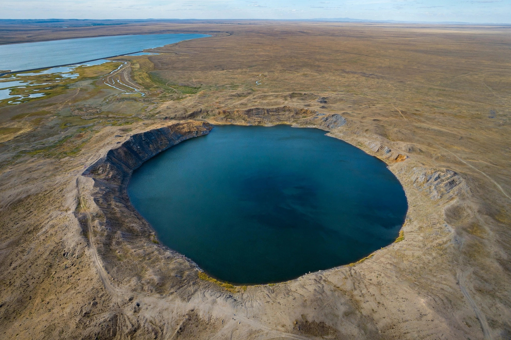

The Semipalatinsk Test Site (also called the Polygon) was the primary testing site for the Soviet Union's nuclear weapons programme, located on the steppe of north-eastern Kazakhstan, about 150 kilometres west of the city of Semipalatinsk (now Semey). Between 1949 and 1989 the USSR conducted 456 nuclear tests there — 340 underground and 116 in the atmosphere or on the surface — including the first Soviet atomic bomb and the first Soviet hydrogen bomb. The tests exposed more than a million local residents to radioactive fallout, leaving a legacy of illness and contaminated land.
| Semipalatinsk Test Site | |
|---|---|
 A lake-filled crater left by an underground nuclear test at the Semipalatinsk site "Atomic Lake" crater at the site | |
| Location | North-east Kazakhstan, near Kurchatov |
| Area | About 18,500 km² |
| Active | 1949–1989 |
| Tests | 456 (116 atmospheric/surface, 340 underground) |
| First test | RDS-1, 29 August 1949 |
| Closed | 29 August 1991 |
The site was chosen in 1947 by Lavrentiy Beria's atomic project administration; the closed city of Kurchatov was built to serve it. The first Soviet atomic bomb, RDS-1 ("Joe-1"), was detonated on a tower on 29 August 1949. On 12 August 1953 the USSR tested its first thermonuclear device, RDS-6s, and on 22 November 1955 the RDS-37, a true two-stage hydrogen bomb, was air-dropped over the site. Atmospheric testing ended with the Partial Test Ban Treaty of 1963, but underground testing continued until October 1989.
Villages downwind of the site — including Karaul, Sarzhal, and Dolon — received heavy fallout, particularly from the tests of 1949 and 1953, often without warning or evacuation. Studies have documented elevated rates of cancer, birth defects, and genetic damage across generations of the exposed population, estimated at 1.2 to 1.5 million people. Large areas of the Polygon remain contaminated, and after 1991 the poorly guarded site attracted scrap-metal scavengers; a long-running US–Kazakh–Russian programme secured fissile material and sealed test tunnels.
In 1989 the poet Olzhas Suleimenov founded the Nevada–Semipalatinsk movement, which mobilised hundreds of thousands of Kazakhs against testing and linked their campaign to activists near the US Nevada Test Site. Testing halted, and on 29 August 1991 — exactly 42 years after the first explosion — President Nursultan Nazarbayev formally closed the site. Kazakhstan voluntarily gave up the nuclear arsenal left on its territory after the Soviet collapse. In 2009 the UN General Assembly designated 29 August the International Day against Nuclear Tests, and parts of the site have since been released for economic use, monitored for residual contamination.
Categories: Nuclear test sites · Soviet nuclear weapons programme · Kazakhstan